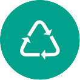

Three great ways YOU can eliminate waste and protect our environment and communities!
Waste, and how we choose to handle it, affects our world's environment and our community’s health & safety. Since by now you probably know that you need a healthy environment for your own health and happiness, you can understand why effective waste management is so important to YOU and everyone else. If you knew that by changing your habits could eliminate garbage trucks and dumps for good? If yes, then get involved!
REDUCE
Reducing waste is an effective means of reducing the amount we throw away.
The choices we make as consumers have a direct impact on the amount of waste we generate.
The best way to manage waste is to not produce it. Shopping carefully and being aware of a few guidelines can do this:
- Buy products in bulk. Larger, economy-size products or ones in concentrated form use less packaging and usually cost less per ounce.
- Avoid over-packaged goods, especially ones packed with several materials such as foil, paper, and plastic. They are difficult to recycle, plus you pay more for the package.
- Avoid disposable goods, such as paper plates, cups, napkins, razors, and lighters.
- Throwaways contribute to the problem, and cost more because they must be replaced again and again.
- Buy durable goods - ones that are well built or that carry good warranties. They will last longer, save money in the long run and save and fill space.
- At work, make two-sided copies when ever possible.
- Maintain central files rather than using several files for individuals.
- Use electronic mail or main bulletin board.
- Use cloth napkins instead of paper napkins.
- Use a dishcloth instead of paper towels.
REUSE
Reusing waste can take many forms.
From donating used clothes, furniture and toys to charity to swapping out plastic bags for reusable ones,
we can work to divert waste from going in the garbage.
It makes economic and environmental sense to reuse products. Sometimes it takes creativity:
- Reuse products for the same purpose. Save paper and plastic bags, and repair broken appliances, furniture and toys.
- Reuse products in different ways. Use a coffee can to pack a lunch; use plastic microwave dinner trays as picnic dishes.
- Sell old clothes, appliances, toys, and furniture in garage sales or ads, or donate them to charities.
- Use resalable containers rather than plastic wrap.
- Use a ceramic coffee mug instead of paper cups.
- Reuse grocery bags or bring your own cloth bags to the store. Do not take a bag from the store unless you need one.

RECYCLE
There are many ways to recycle, and many different materials can be recycled.
There are four general categories of goods and materials that can be recycled:
Curbside recyclables, Organics, Textiles and Electronics.
The best way to manage waste is to not produce it. Shopping carefully and being aware of a few guidelines can do this:
- Buy products in bulk. Larger, economy-size products or ones in concentrated form use less packaging and usually cost less per ounce.
- Avoid over-packaged goods, especially ones packed with several materials such as foil, paper, and plastic. They are difficult to recycle, plus you pay more for the package.
- Avoid disposable goods, such as paper plates, cups, napkins, razors, and lighters.
- Throwaways contribute to the problem, and cost more because they must be replaced again and again.
- Buy durable goods - ones that are well built or that carry good warranties. They will last longer, save money in the long run and save and fill space.
- At work, make two-sided copies when ever possible.
- Maintain central files rather than using several files for individuals.
- Use electronic mail or main bulletin board.
- Use cloth napkins instead of paper napkins.
- Use a dishcloth instead of paper towels.